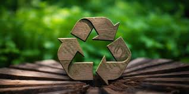

The Importance of Recycling
Recycling is crucial for reducing waste and conserving natural resources. By recycling materials like paper, plastic, and metal, we can reduce the amount of waste that ends up in landfills and decrease the need for raw materials.
How to Recycle Properly
To recycle effectively, make sure to separate recyclables from non-recyclables. Rinse out containers to remove food residues and follow local recycling guidelines for proper sorting.
Benefits of Recycling
- Reduces landfill waste
- Conserves natural resources
- Reduces pollution and greenhouse gas emissions
Recycling also promotes sustainability by reusing materials and reducing the environmental impact of waste disposal.